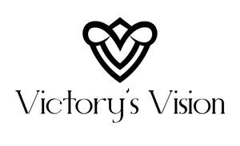

Trade Mark Journal No.2025/009 28 February 2025
UK00004162689 19 February 2025 (25)

- Class 25
- Clothes; Clothing; Swaddling clothes; Baby clothes; Beach clothes; Nappy pants [clothing]; Denims [clothing]; Jackets [clothing]; Work clothes; Shorts [clothing]; Drawers [clothing]; Aprons [clothing]; Clothes for sports; Jackets (Stuff -) [clothing]; Stuff jackets [clothing]; Clothes for sport; Linen clothing; Headbands [clothing]; Headbands for clothing; Kerchiefs [clothing]; Bottoms [clothing]; Gloves [clothing]; Gloves as clothing; Capes (clothing); Furs [clothing]; Trunks being clothing; Maternity clothing; Babies' pants [clothing]; Jerseys [clothing]; Layettes [clothing]; Clothing layettes; Woolen clothing; Oilskins [clothing]; Hoods [clothing]; Clothing for leisure wear; Ready-to-wear clothing; Garments for protecting clothing; Clothing for babies; Gabardines [clothing]; Bodies [clothing]; Belts [clothing]; Belts for clothing; Tops [clothing]; Gussets for underwear [parts of clothing]; Playsuits [clothing]; Pockets for clothing; Collars [clothing]; Veils [clothing]; Knitwear [clothing]; Corsets [clothing, foundation garments]; Paper hats for use as clothing items; Silk clothing; Fabric belts [clothing]; Mitts [clothing]; Beach clothing; Hats (Paper -) [clothing]; Paper hats [clothing]; Belts (Money -) [clothing]; Money belts [clothing]; Braces for clothing; Chaps (clothing); Ready-made clothing; Gussets for bathing suits [parts of clothing]; Embroidered clothing; Casual clothing; Knitted clothing; Sports [Boots for -]; Plus fours; Peaked caps; Shoes; Insoles [for shoes and boots]; Insoles for shoes and boots; High-heeled shoes; Wooden shoes [footwear]; Dress shoes; Sneakers [footwear]; Slip-on shoes; Leather shoes; Tongues for shoes and boots; Jogging shoes; Tennis shoes; Ballet shoes; Esparto shoes or sandals; Walking shoes; Rubber shoes; Hiking shoes; Shoes soles for repair; Pullstraps for shoes and boots; Esparto shoes or sandles; Basketball shoes; Athletic shoes; Running shoes; Volleyball shoes; Sandals and beach shoes; Soccer shoes; Sneakers; Waterproof shoes; Shoe soles; Heel pieces for shoes; Dance shoes; Snowboard shoes; Canvas shoes; Shoes for foot volleyball; Foot volleyball shoes; Cycling shoes; Shoes for leisurewear; Sports shoes; Wooden shoes; Platform shoes; Footwear soles; Soles for footwear; Golf shoes; Athletics shoes; Sport shoes; Yoga shoes; Mountaineering shoes; Hockey shoes; Baby shoes; Roller shoes; Baseball shoes; Insoles for footwear; Bowling shoes; Riding shoes; Rain shoes; Football shoes; Gymnastic shoes; Boxing shoes; Aqua shoes; Training shoes; Handball shoes; Fittings of metal for boots and shoes; Skiing shoes; Beach shoes; Flat shoes; Shoes for casual wear; Nursing shoes; Leisure shoes; Shoes for infants; Stiffeners for shoes; Rugby shoes; Heel protectors for shoes; Footwear; Women's shoes; Work shoes; Flip-flops for use as footwear; Tap shoes; Hidden heel shoes; Apres-ski shoes; Deck shoes; Driving shoes; Pumps [footwear]; Sandals; Infants' shoes; Shoe soles for repair; Spiked running shoes; Studs for football shoes; Anglers' shoes; Cleats for attachment to sports shoes; Boots; Trainers [footwear]; Shoe straps; Protective metal members for shoes and boots; Inner socks for footwear; Rubbers [footwear]; Wedge sneakers; Shoe uppers; Basketball sneakers; Knitted baby shoes; Headgear for wear; Casual wear; Sashes for wear; Breeches for wear; Bridesmaids wear; Maternity wear; Formal wear; Ladies wear; Rain wear; Exercise wear; Sports wear; Evening wear; Dresses for evening wear; Ski wear; Leisure wear; Head wear; Tennis wear; Surf wear; Infant wear; Face masks [fashion wear] ; Children's wear; Formal evening wear; Swim wear for children; Clothing for wear in judo practices; Clothing for wear in wrestling games; Paper hats for wear by nurses; Swim wear for gentlemen and ladies; Dress shirts; Paper hats for wear by chefs; Dress pants; Men's dress socks; Dress shields; Shields (Dress -); Braces for clothing [suspenders]; Dress suits; Braces [suspenders] for clothing / Suspenders [braces] for clothing; Korean outer jackets worn over basic garment [Magoja]; Parts of clothing, footwear and headgear; Party hats [clothing]; Fancy dress costumes; Camouflage shirts; Leather belts [clothing]; Collars for dresses; Leather dresses; Camouflage pants; Leggings [trousers]; Jogging outfits; Gussets for tights [parts of clothing]; Visors [clothing]; Casual shirts; Collar liners for protecting clothing collars; Wristbands [clothing]; Turtleneck shirts; Jogging bottoms [clothing]; Camouflage gloves; Waterproof clothing; Bra straps [parts of clothing]; Men's and women's jackets, coats, trousers, vests; Gloves for apparel; Shirts for suits; Leather clothing; Clothing of leather; Leather (Clothing of -); Bandeaux [clothing]; Knit shirts; Dresses; Footwear [excluding orthopedic footwear]; Athletic footwear; Footwear uppers; Uppers (Footwear -); Footwear for snowboarding; Footwear for sports; Sports footwear; Footwear for sport; Footwear for use in sport; Footwear for women; Casual footwear; Footwear for men; Athletics footwear; Leisure footwear; Climbing footwear; Golf footwear; Fishing footwear; Heelpieces for footwear; Beach footwear; Tips for footwear; Footwear (Tips for -); Welts for footwear; Footwear (Welts for -); Children's footwear; Non-slipping devices for footwear; Footwear (Non-slipping devices for -); Infants' footwear; Footwear not for sports; Ladies' footwear; Fittings of metal for footwear; Footwear (Fittings of metal for -); Traction attachments for footwear; Footwear for men and women; Footwear made of vinyl; Footwear made of wood; Sportswear; Boots for sports; Headwear; Visors [headwear]; Visors being headwear; Bonnets [headwear]; Caps [headwear]; Caps being headwear; Leather headwear; Fishing headwear; Peaked headwear; Sun visors [headwear]; Children's headwear; Headgear; Beanie hats; Fascinator hats; Sports headgear [other than helmets]; Fashion hats; Hats; Sports caps and hats; Beanies; Thermal headgear; Visors [hatmaking]; Bobble hats; Toques [hats]; Baseball caps and hats; Cowls [clothing]; Baseball hats; Cloche hats; Clothing for horse-riding [other than riding hats]; Muffs [clothing]; Cap visors; Ski hats; Jackets being sports clothing; Fur hats; Headdresses [veils]; Windproof clothing; Neckwear; Rainproof clothing; Boas [clothing]; Sun hats; Caps with visors; Sports clothing [other than golf gloves]; Outerwear; Golf clothing, other than gloves; Clothing for sports; Sports clothing; Headbands; Fingerless gloves as clothing; Men's clothing; Mufflers [clothing]; Woolly hats; Ushankas [fur hats]; Mitres [hats]; Cashmere clothing; Latex clothing; Woven clothing; Infant clothing; Leisure clothing; Ties [clothing]; Drawers as clothing; Athletic clothing; Clothing for children; Clothing for infants; Clothing for cycling; Weatherproof clothing; Water-resistant clothing; Triathlon clothing; Handwarmers [clothing]; Clothing for skiing; Thermal clothing; Fishing clothing; Dance clothing; Plush clothing.
VICTORY'S VISION LTD